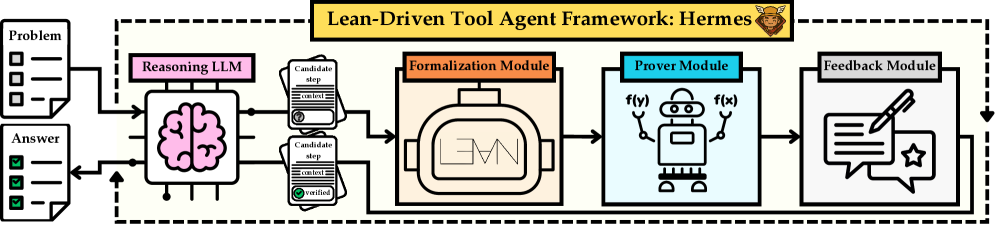

A tool-assisted agent interleaves informal LLM reasoning with proof steps verified by a Lean 4 REPL backend.
Abstract
Informal mathematics has been central to modern large language model (LLM) reasoning, offering flexibility and efficient construction of arguments. However, purely informal reasoning is prone to logical gaps and subtle errors that are difficult to detect and correct. In contrast, formal theorem proving provides rigorous, verifiable mathematical reasoning, where each inference step is checked by a trusted compiler, but lacks the exploratory freedom of informal problem-solving. This mismatch leaves current LLM-based math agents without a principled way to combine the strengths of both paradigms. In this work, we introduce Hermes, the first tool-assisted agent that explicitly interleaves informal reasoning with formally verified proofs in Lean. The framework performs intermediate formal checking to prevent reasoning drift and a memory module for proof continuity across multi-step reasoning chains, enabling both exploration and verification. We evaluate Hermes on four challenging mathematical reasoning benchmarks using LLMs of varying parameter scales, from small models to state-of-the-art systems. Across all settings, Hermes reliably improves the reasoning accuracy of base models while substantially reducing reasoning token usage and computational cost compared to reward-based approaches. On difficult datasets such as AIME and HARDMath2, Hermes@1 achieves up to a 40% accuracy improvement while using 80% fewer total inference FLOPs. When scaled at test time, Hermes@5 boosts accuracy further by 20%. The implementation and codebase are publicly available at https://github.com/aziksh-ospanov/HERMES.
Problem
Informal mathematical reasoning in LLMs is flexible but prone to logical gaps and subtle errors. Formal theorem proving provides rigorous verification but lacks the exploratory freedom of informal problem-solving. No principled framework existed to combine both paradigms for reliable step-by-step mathematical reasoning.
Approach
HERMES is a Lean 4-driven multi-modular reasoning agent integrating LLM reasoning with formal verification. It comprises four modules: an LLM that generates reasoning steps, a formalizer that translates them into Lean code, a prover that symbolically verifies correctness, and a feedback module that returns error signals for self-correction. A memory buffer stores previously verified steps as context for future attempts.

Figure 1: Overview of Hermes framework. Hermes is a Lean4-driven, multi-modular reasoning agent integrating LLM reasoning with formal verification for reliable mathematical problem solving. It comprises four modules: an LLM that generates reasoning steps, a formalizer that formalizes these steps into Lean code, a prover that symbolically verifies their correctness, and a feedback module that retur
Results
With DeepSeek-V3.2 as the base reasoner, HERMES achieves 97.4% on MATH500 and 66.7% on AIME'25 (up from 50.0% baseline). The memory buffer and prover module together contribute the largest gains. HERMES operates between ORM and PRM cost bounds, providing verification without requiring per-step human labels.